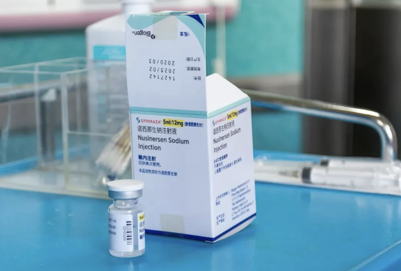

这是2024年国家医保药品目录谈判现场最"平常"
却也最牵动人心的一幕。
长桌两侧，
一边是药企代表，
他们考虑的是研发投入、定价逻辑与市场博弈；
另一边是国家医保谈判专家，
他们关注的，是无数普通患者是否能够按时、长期用上救命药。
在这张谈判桌上，每一粒药的定价，都是多方利益的最佳平衡点
——既要保证药企的创新回报，维系医药研发的可持续性；
又要突破"天价药"的桎梏，让救命药真正惠及普通患者。
一场谈判，
改变的从不只是几个数字，
而是无数家庭的命运轨迹。
一款药品需要经历怎样的流程，
才能真正“进医保”？
无论是谈判、竞价，还是集中采购，药品最终的落点，
都是《国家基本医疗保险工伤保险和生育保险药品目录》
但进入目录，并非一蹴而就
舆情温度计：医保谈判背后的情感图谱
让"罕见"被看见，让爱不罕见！
钱冰桥的货车后座总铺着软垫，6岁的儿子趴在上面，看窗外车流掠过。
孩子腰椎侧弯如弓，肌肉无力到无法坐直——2017年确诊SMA那天起，"无药可医"四个字像车辙印，碾在这个父亲的日子里。
2019年，特效药"诺西那生钠"获批的消息曾让病友群刷屏，但70万元一针的高昂标价让"有药可医"变得不真切。
按推荐疗程，6针、终身维持——费用足够在老家盖几栋楼。

这就是那支改变命运的药
诺西那生钠注射液，治疗SMA（脊髓性肌萎缩症）的特效药。
从70万元一针到最终的3.3万元，
每一分钱的降价都承载着无数家庭的希望。
图片来源：视觉中国
"就像看着救命绳在眼前，却够不着。"
转折点出现在2021年11月的医保谈判间。福建医保局张劲妮握着话筒，对药企代表重复："每一个小群体都不应该被放弃。"
决定命运的关键时刻
2021年医保谈判现场，每一次报价的背后都是生命的重量。
在这个会议室里，决策者们用责任和坚持为患者争取希望。
图片来源：CCTV1新闻
当企业报价从5.368万一路降到3.402万，她依然摇头："我们的底价空间是0。"最终，3.3万的数字落下时，不少人红了眼眶。
2022年1月1日，诺西那生钠正式纳入医保，同日，全国已有11省市近20名患者完成注射。
"现在一切的辛酸值了。"
网络声音：医保谈判的民意温度

本词云图以“医保谈判 罕见病”为关键词，采集相关微博下的评论内容（共计约1600条）生成，直观反映了公众在该议题中的关注焦点与情感倾向。从词频分布来看，“关注”“支持”“让利患者”“药价透明”“人民健康”“惠及百姓”等关键词高频出现，表明网民普遍聚焦于罕见病药品在医保谈判中的药品降价、患者减负与用药保障等方面的实际成效。
“社会共赢”“减负”“生命至上”“携手”等词语的出现，也体现出公众对制度公平性、医保覆盖广度以及公共利益实现的高度关注。